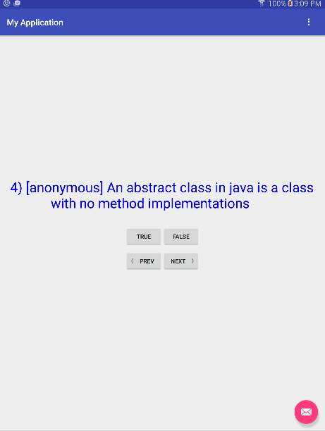
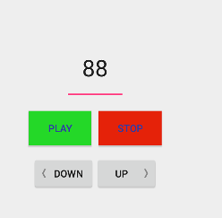
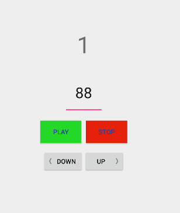

COMP 2601 Winter 2016
Ex 06 AsyncTask and Handlers: Threading in Android
© L.D. Nel 2016
Revisions -none yet
Description:
The purpose of this exercise is to familiarize you with the AsyncTask and Handler classes that android provides to help with threading. In particular they allow other threads to handle slow operations or to report back results to the main activity thread.
You need to demonstrate your exercise to the TA or Prof. before you leave the class to get credit for it. Marks: 2 or completion, 1 for partial progress, 0 for no show or no progress. (A mark of 1 can be upgraded to 2 is show us your completed work within one week of this exercise.)
Instructions:
Background:
In android the main activity thread is not allowed to do network access and conversely other threads are not allowed to update the main activity's view components. This creates a programming dilemma: long operations must be offloaded to other threads but those threads cannot update the user interface. Some helper classes are supplied by android to help with this: AsyncTask and Handler. For tasks that want to report progress to the main UI thread a ProgressBar helper class is also provided. (See the demo code posted in notes 04 for an example of using the progress indicators.)
For this class exercise we have two distinct projects: one using AsyncTask to read a datafile from the network. The other is a project to which you need to add a Handler to report information back to the UI thread.
Part I: AsyncTask
Demo Code
Open and run the demo part1 project in the demo_code folder. Study the code. It opens a raw file resource which is an XML data file of true-false test questions. The questions are presented on the UI where the user can move between previous and next questions and answer them. This is similar to code you created for the XmlPullParser exercise. (Notice by the way that the layout changes for landscape mode. Can you see how that is being done in the code?)

Problem 1 Asynchronous File Parsing)
Notice in the demo code the resource file is being opened and parsed in the QuizActivity's onCreate() method (i.e on the main thread of computation). File reading is a slow operation an we want to do it on a separate thread using an AsyncTask.
Create an private inner class called FileDownloadTask within the QuizActivity class with the following structure:
private class FileDownloadTask extends AsyncTask <Void, Void, Void> {
@Override
protected Void doInBackground(Void... arg0) {
//excuted on background thread
//open and parse data file
}
@Override
protected void onPostExecute(Void result){
//executed on main UI thread
}
}
Recall that inner classes in java have access to the instance variables of their enclosing class - a kind of "poor man's" closures. Now relocate the code that opens and parses the datafile to within your async. task class.
Launch the task as follows:
Log.i(TAG, "starting file download Task");
FileDownloadTask download = new FileDownloadTask();
download.execute();
You should now be able to run the app and have the file opened and parsed on the background thread associated with the AsyncTask. Verify that this works (the code should behave as before).
Problem 2 Download Data File from Dropbox)
Now what we really want to do is download the exam data file from a dropbox location stored on the internet.
For this make the following modifications:
1) Assign permissions in the manifest. Android requires that applications ask permission to use the internet or check network status. Add the following two lines to the AndroidManifest.xml file.
<uses-permission android:name="android.permission.INTERNET" />
<uses-permission android:name="android.permission.ACCESS_NETWORK_STATE" />
2) Write the following private helper method that will allow the app to check whether it is connected to the network:
//Helper method to determine if Internet connection is available.
private boolean isNetworkAvailable() {
ConnectivityManager connectivityManager
= (ConnectivityManager) getSystemService(Context.CONNECTIVITY_SERVICE);
NetworkInfo activeNetworkInfo = connectivityManager.getActiveNetworkInfo();
return activeNetworkInfo != null && activeNetworkInfo.isConnected();
}
3) Observe that the following variables have already been defined to represent the network URL from which to download the file and the name of the local file we will store it to :
private static final String fileURLString = "https://www.dropbox.com/s/bf0grfz7kr801pj/comp2601exam.xml?dl=1"; private static final String downloadedQuestionFileName = null;
Also observe that a .java class FileDownloader has already been written that will allow you to download a file from a network location and store it in a local resource file. You should not have to modify this FileDownloader class for the exercise.
When launching the AsyncTask check first whether the network is connected:
if(isNetworkAvailable()){
Log.i(TAG, "starting file download Task");
FileDownloadTask download = new FileDownloadTask();
download.execute();
}
From within your AsyncTask you should now be able to download the network file and write it to a local file as follows:
try {
FileOutputStream fileOutputStream = openFileOutput(downloadedQuestionFileName, Context.MODE_PRIVATE);
FileDownloader.DownloadFromUrl(fileURLString, fileOutputStream);
} catch (FileNotFoundException e) {
Log.i(TAG, "ERROR: file to download not found");
e.printStackTrace();
}
4) Before you try to parse the downloaded file you should probably read through it a line at a time and write those lines to the logcat terminal.
A word of caution about the dropbox file location we have provided. The link provided is:
https://www.dropbox.com/s/bf0grfz7kr801pj/comp2601exam.xml?dl=1
If you visit that link with a browser you probably will not see the file, but if you visit the link with the last part set to ?dl=0 instead of ?dl=1 you should see the webpage that dropbox provides in your browser. What is happening is that dropbox is trying to render a webpage for you but that is not what you want to download. Setting ?dl=1 will allow you to download just the data file, not a webpage showing the file. That is why we suggest you print out the lines of the file as a debug step before you proceed to trying to parse it. You want to make sure you are dealing with the actual XML and not a web page rendering of it.
When you are convinced you are opening an XML file, go ahead and invoke the parsing code. You should now have the app showing you an exam downloaded from the dropbox location.
Part II: Handlers
Demo Code
Open and run the demo part2 Dr Beat project in the demo_code folder. Study the code. It implements a simple musician's metronome that allows you to set a tempo and the start and stop it. When it is running it will play sound files for the metronome clicks -more cowbell! Notice the downbeat click (on beat one) is a different, accent, sound.

This demo code illustrates a couple of intesting things. First the main activity object and the SoundManager object are accessible via static instance variables. That is, any code on any thread can get access to the main activity instance by calling MainActivity.getInstance(). Similarly for the SoundManager instance. This works in this code because there is only supposed to be one instance of the SoundManager and the MainActivity.
Second notice that the Ticker thread runs a "game style" while-loop. That is, a while-loop running continously doing as many computations as it can. It uses time samples to determine when it is time to play a sound. Game loops typically try go get in lots of computations and once in a while render a frame or play a sound. By using time stamps the timing of the sound, or animation, is not affected by the speed, or number of repetitions, of the while-loop.
Problem3
The intention of the app, however, is that a beat count of 1...2....3....4...1... is shown on the UI. That is, each time a sound plays the count on the UI advances: 1,2,3,4,1,2,3,4,1,... etc. So we want the Ticker thread to cause the main tread to display the beat count in its
mBeatCountView
TextView. To accomplish this we will use a Handler.
A Handler is an android helper class that allows a thread to run code on another thread. Here we want the Ticker thread to be able to run code on the Main thread to update the UI.
1) In the MainActivity class declare a private Handler hander; instance variable and in its onCreate() method intialize it as follows:
handler = new Handler();
The handler is declared, and created, in the thread where you want the code to run -in this case the MainActivity UI thread.
2) In the Ticker.Beat class's run method (which runs on Ticker's thread) where the sound gets played you use the main activity's handler to post the code you want run on the main thread. The code would look something like:
mainActivityInstance.getHandler().post(new Runnable() {
public void run() {
mainActivityInstance.setBeatCount(beatCount);
}
});
Notice this code fragment is written as though you have access to the main activity object via mainActivityInstance. A reference to this object could be passed in during construction of the Ticker object, but you could also get access to the MainActivity instance via the MainActivity.getInstance() static method that has been defined and then also provide getHandler() and setBeatCount() methods.
Once you have wired in the Handler you should be able to display the beats 1,2,3,4,1,... when the metronome is playing.

When you have completed these problems demonstrate your code to the TA or Prof. to get credit for the tutorial.
Optional:
Modify the code so you can stop and restart the metronome after a device rotate. Currently the metronome keeps playing but one you rotate you cannot stop it.
Modify the file download example so the file does not get downloaded and parsed each time the device is rotated.